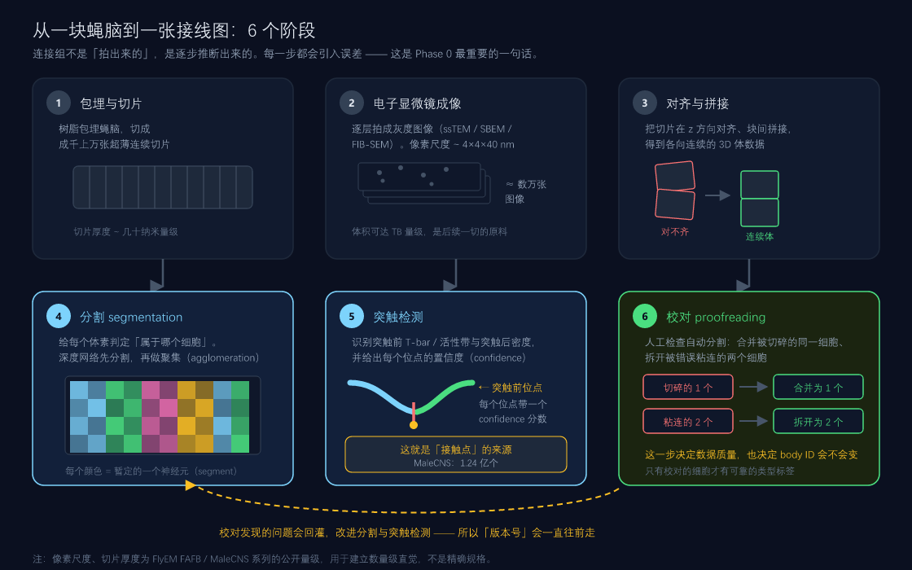
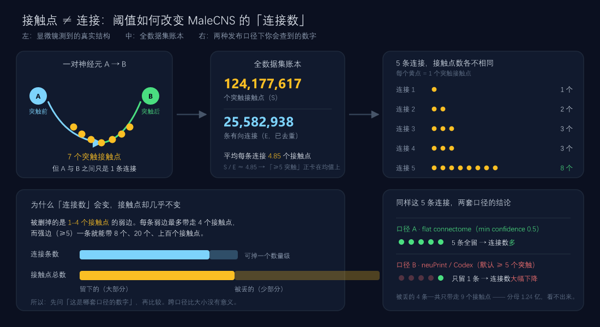
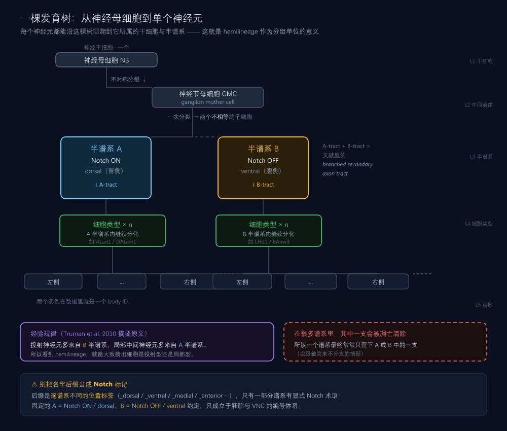
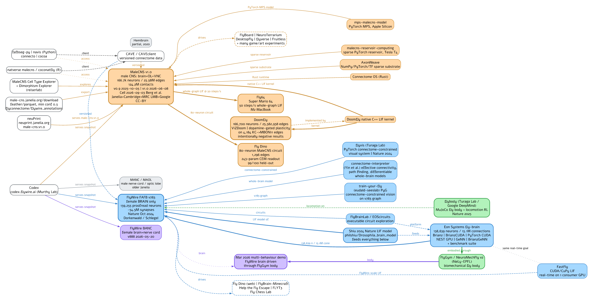

先把词搞对，
再去看 16.7 万个神经元
这一页是《MaleCNS v1.0 学习指南》阶段 0 的配套材料。它不讲通路、不写代码， 只做一件事：把连接组学的基本词汇和数量直觉装进你脑子里， 让你在阶段 1 打开 Codex / neuPrint 时看得懂界面上每一个字段。
00 为什么阶段 0 不能跳Why this page exists
连接组学有一批看起来像常识、其实是专业术语的词。它们的日常含义和数据里的含义不一样， 而恰恰是这些词决定了你会不会把两类不相干的数字放在一起比较。
同一个 MaleCNS，在不同工具里会显示不同的神经元数和连接数。 这不是数据有错，而是阈值口径不同。不知道这一点的人， 会在第一天就得出「neuPrint 和 flat connectome 对不上，数据不可靠」这种错误结论。
阶段 0 的过关标准（来自指南）
指南给阶段 0 定的过关标准是：能说出 MaleCNS 与 FlyWire 的三点差异。 本页把它拆成可检查的动作：
进入阶段 1：打开 Codex 或 neuPrint，手工走通一条已知通路 （R1–R6 → … → DNg13 或 糖 GRN → SEZ → MN9）， 并说出中间经过哪些细胞类型。阶段 1 的难度几乎全部来自阶段 0 没打牢。
01 MaleCNS 是什么What it is
MaleCNS 是成年雄性果蝇（Drosophila melanogaster）的 完整中枢神经系统连接组：中央脑 + 视叶 + 腹神经索（VNC），颈连接完整。 由 Janelia FlyEM 团队重建，2026-06-08 发布 v1.0。
把连接组想成一张城市道路图：它告诉你哪条路通向哪里、有多宽， 但不告诉你车流速度、红绿灯配时、司机意图。 连接组 = 接线图；它能约束动力学，但不包含动力学。 阶段 4 做仿真时，你补上的正是「车流规则」—— 而那部分是你的建模假设，不是测量值。
核心数字
预印本口径为 166,691
预印本为 11,691
精确保留值见下方口径表
本页对指南做了联网核查（2026-09-17）。指南混用了「2025-10 预印本」和「2026-09 正式发表」两套数字， 最典型的是细胞类型统计。正式 Cell 版已更新如下：
| 项目 | 预印本 2025-10 | → | 正式 Cell 2026-09-03 |
|---|---|---|---|
| 神经元数 | 166,691 | → | 166,700 |
| 细胞类型总数 | 11,691 | → | 11,710 |
| 同构 isomorphic | 7,205 | → | 8,069 |
| 异形 dimorphic | 114 | → | 138 |
| 雄性特有 | 262 | → | 289 |
| 雌性特有 | 69 | → | 71 |
指南写的「262 个性别特异 + 114 个二态类型 = 4.8%」是预印本口径 （Janelia 项目页旧文案至今仍在用这一版）。正式发表版是 289 + 138（+71 雌性特有）。 那个 4.8% 的分母官方没有明说 —— 按类型算 376/11,691 ≈ 3.2%，不等于 4.8%， 所以它大概率是「神经元占比」而非「类型占比」，但目前待核实。
| 项目 | 数值 | 口径与说明 |
|---|---|---|
| 神经元 | 166,700 | 已核实 正式发表摘要 + Codex MCNS v1.0 + 官方 media 页一致。 166,691 是预印本数字，不是「官方 vs 社区」的关系 |
| 覆盖区域 | 中央脑 + 视叶 + VNC | 已核实 官方原文：central brain、optic lobes、ventral nerve cord， intact neck connective（颈连接完整） |
| 数据版本 | v0.9 / v1.0 | 已核实 v1.0 = 2026-06-08，官方变更仅两条： 「Minor proofreading changes」「Refinement of neuron annotations」。 v0.9 官方两处口径不一致（Release Notes 写 10-05，新闻写 10-03）→ 标注 10-03/05 |
| 过滤阈值 | 两套口径 | 已核实 flat-connectome 文件名内嵌 minconf-0.5；
Codex FAQ 明文 MCNS 默认 5+（FAFB 5+ / BANC 3+ / MANC 1+ / MAOL 1+） |
| 性别 | 雄性 ♂ | 已核实 成虫、5 日龄、Canton-S G1 × w1118，标本编号 Z0720-07m |
| 许可 | CC-BY 4.0 | 已核实 署名实体：FlyEM / HHMI Janelia、剑桥大学动物学系、 MRC LMB、Google Research（另可补 Wellcome Trust、Champalimaud Foundation）。 注意：CC-BY 只覆盖数据，Cell 正文本身是订阅制 |
三个最容易搞错的数字
这是本页最重要的一个实用小节。你不是被要求记住数字，而是要被要求 在引用任何数字前先问「这是哪个口径」。
| 你会看到的数字 | 它到底是什么 | 状态 |
|---|---|---|
| 166,700 | 神经元总数。正式发表 + Codex MCNS v1.0 口径 | 已核实 |
| 166,691 | 同一件事的预印本口径 | 旧口径 |
| 165,122 | 社区项目按 annotation status = Traced 过滤出的子图（25,563,197 条边）——
这才是「社区过滤值」 |
已核实 |
| 124,177,617 | 突触接触点精确整数。官方新闻口径为 124.2 million synapses / 「124 million synaptic connections」 | 量级确认，整数待核实 |
| 25,582,938 | 指南所用的「有向连接（去重后）」数。本次核查未能坐实这个整数。 官方作者计数 notebook（v0.9 口径）：未阈值 25,563,426 条边； 加 ≥5 突触阈值后 6,237,402 条边。Codex MCNS v1.0 界面显示 6,242,118 connections | 待核实 |
| 6,237,402 / 6,242,118 | ≥5 突触阈值下的连接数 —— 这才是你在 neuPrint / Codex 里会看到的量级 | 已核实 |
第 04 节推出的「平均每条连接 4.85 个接触点」= 124,177,617 / 25,582,938， 两个输入里有一个待核实，所以 4.85 这个具体数值请当作量级示意。 但它支撑的定性结论不受影响：阈值卡在均值附近 → 砍掉大量弱边，接触点总量几乎不动。 这一点已被官方口径独立佐证 —— 未阈值 2,556 万条边降到 624 万条（约剩 1/4）， 而接触点仍是 1.24 亿量级。
MaleCNS = 雄 · 全 CNS（含 VNC） · 166,700 神经元 / 约 1.24 亿接触点 · 门户在
male-cns.janelia.org + neuPrint（male-cns:v1.0）。
02 它不是 FlyWire 的新版本Not a FlyWire update
这是阶段 0 最容易、也最昂贵的误解。看到「果蝇全脑连接组」就以为 MaleCNS 是 FlyWire 的升级版 —— 两者的 ID 体系完全不通用， 混用的结果是你的分析全部作废。
三点差异（必须能张口说出）
| 维度 | MaleCNS v1.0 | FlyWire FAFB v783 |
|---|---|---|
| ① 性别 | 雄性 ♂ | 雌性 ♀ |
| ② 范围 | 全 CNS：脑 + 视叶 + VNC | 仅脑（无 VNC、无完整视叶） |
| ③ 规模与生态 | 166,700 神经元、约 1.24 亿接触点、新，多为社区 demo | 139,255 神经元（已校对）、约 5×10⁷ 化学突触（论文原文口径）、成熟，有完整工具链与教程 |
| 快照/发布 | v1.0 · 2026-06-08 | v783 · 2023-10 |
| 主论文 | Berg et al., Cell 2026 DOI 10.1016/j.cell.2026.08.015 |
Dorkenwald et al., Nature 634:124–138 (2024) DOI 10.1038/s41586-024-07558-y |
| 官方门户 | male-cns.janelia.org / neuPrint | flywire.ai / Codex |
| 编程接口 | neuprint-python、R 包 natverse::malecns |
CAVEclient、fafbseg-py + navis |
| ID 互通 | 不通用，绝不可混用 —— 没有官方的跨数据集 ID 级 映射 | |
把 FlyWire 的 body ID 丢进 MaleCNS 的 neuPrint 查询，或者反过来。
两个数据集是两只不同的蝇子、两套独立的分割结果，编号只是各自卷内的序号，
恰好撞号不代表对应同一个神经元。结构上也能一眼看出差别：
FlyWire 的 root ID 是约 18–19 位的大整数（如 720575940625682725），
MaleCNS 的 bodyId 是小整数（如 12781）。
Codex FAQ 的原文说得很清楚：Root IDs are tied to a specific source segmentation and data snapshot.
没有 ID 映射，可是有类型级的 crosswalk：
官方补充数据里的 mcns_fw_edge_comp_mappings.json 给出 MaleCNS ↔ FlyWire 的类型标签对应；
R 包 natverse/malecns 的元数据带 flywireType / mancType 列；
AOTU012 的官方页面也会列出「FlyWire Type(s): AOTU012」。
所以正确的说法是：先把类型对上，再讨论「同一个细胞」。
在 neuPrint 里可以直接验证这件事：flywireType 字段覆盖了
143,156 个 MaleCNS 神经元，对应 8,199 个 FlyWire 类型
（实测于 2026-09-17）。查法见阶段 1。
相关但不同的数据集（别搞混）
| 数据集 | 性别 | 范围 | 规模 / 备注 |
|---|---|---|---|
| MaleCNS / MCNS | ♂ | 脑 + 视叶 + VNC | 166,700 · v1.0 · 标本 Z0720-07m |
| FlyWire FAFB | ♀ | 仅脑 | 139,255 · v783 · 生态最成熟 |
| BANC | ♀ | 脑 + 神经索 | 158,262 · v888 快照 2026-05-20（另有 v626 2025-07-20） |
| MANC | ♂ | 仅神经索（VNC） | 23,665 · v1.2.1 |
| MAOL | ♂ | 仅右侧视叶 | 52,445 · v1.1 · 「Male Adult Fly Right Optic Lobe」 |
| Hemibrain | ♀ | 中央脑的一部分 | 约 25,000 · 2020 年 · 是雌性，不是雄性 |
Codex 把 FAFB / BANC / MANC / MAOL / MCNS 这 5 个收在同一个界面里，支持跨数据集搜索
（查询前加 @ 前缀，例如 @ T4a 会在所有数据集里搜 T4a）。这是搜索便利，不代表 ID 通用。
MAOL（雄性视叶）与 MaleCNS 来自同一只果蝇（标本 Z0720-07m）。
如果你把两个数据集的神经元数加起来做「总量统计」，
会重复计数同一批视叶细胞。跨数据集汇总前，必须确认它们是不是同一标本。
03 连接组与电子显微镜重建Connectome & the EM pipeline
什么是「连接组」
连接组（connectome）是神经元之间全部连接关系的图谱 —— 一张 有向、带权、极稀疏的图。现代果蝇连接组是致密电子显微镜重建的产物： 把组织切成纳米级薄片、逐片成像、用算法把每个细胞从灰度像素里「抠」出来， 再找出细胞之间的突触。
- 致密 EM 连接组（本页讨论的）：逐个突触、逐个细胞，能回答「A 是否直接连 B」。 MaleCNS、FlyWire、Hemibrain、MICrONS 属于这一类。
- 中尺度投射组（mesoscale projection）：用光镜品系标记大量神经元、统计粗粒度投射模式， 不能给出单细胞级的有向连接。FlyLight / NeuronBridge 那一侧。

分辨率：一个容易被引错的数字
管线每一步都有自己的坐标分辨率，「MaleCNS 的分辨率是多少」这个问题本身就不完整 —— 必须问「哪一层」。已核实的官方数字：
| 层 | MaleCNS v1.0 | 对照：FlyWire FAFB |
|---|---|---|
| 对齐 EM + 分割体 | 8 × 8 × 8 nm（各向同性） | 4 × 4 × 40 nm（ssTEM） |
| 核分割 | 16 nm | — |
| 脑 ROI | 256 nm（约 90 个主分区） | — |
| VNC ROI | 256 nm（23 个 VNC 神经毡） | 不适用（FAFB 无 VNC） |
很多科普文章会把 FlyWire 的 4×4×40 nm 直接套到 MaleCNS 头上，这是错的。
MaleCNS 的发布体是 8 nm 各向同性（可从官方 Neuroglancer 场景 JSON 直接读出
x/y/z = 8e-9 m）。成像方式也有元数据冲突：视叶论文写 FIB-SEM，VFB 数据集页标 SBFSEM，
以论文 Methods 为准 待核实。
六个阶段各自在做什么
- 包埋与切片 —— 树脂包埋，切成成千上万张超薄连续切片。
- 电镜成像 —— 逐层拍成灰度图像（ssTEM / SBEM / FIB-SEM），像素与切片厚度在纳米量级；体积可达 TB 级。
- 对齐与拼接 —— z 方向对齐、块间拼接，得到各向连续的 3D 体数据。
- 分割 segmentation —— 给每个体素判定归属：先由深度网络分割，再做聚集（agglomeration）合并成完整细胞。
- 突触检测 —— 识别突触前 T-bar / 活性带与突触后密度，每个位点带一个 confidence 分数。这就是「接触点」的来源。
- 校对 proofreading —— 人工合并被切碎的同一细胞、拆开被错误粘连的两个细胞。这一步决定数据质量。
连接组里的每一个数字，都带着一个推断链条和它的误差。 所以论文里永远会写清楚阈值、置信度、校对程度 —— 这些不是可省略的细节，它们是数字的一部分。
把 MaleCNS 放进连接组学的版图
知道自己站在哪里，比记住数字有用。下面这张表的作用是建立量级感 —— 从 302 个神经元到 1.5 亿个突触，人类走了近 40 年。
| 系统 | 年份 | 规模 | 特点 |
|---|---|---|---|
| C. elegans | 1986 | 302 神经元（雌雄同体） 约 5,000 化学突触 + 2,000 神经肌肉接头 + 600 间隙连接 |
第一个完整连接组，全靠人工 2019 重做：含雄性 385 神经元 |
| 果蝇 1 龄幼虫 | 2023 | 约 3,000 神经元 / 5×10⁵ 突触 | 第一个昆虫连接组 |
| Hemibrain | 2020 | 约 25,000 神经元 / 4,000+ 类型 8×8×8 nm |
半脑（中央脑的一部分）· 雌性 |
| FlyWire FAFB | 2024 | 139,255 神经元 / 约 5×10⁷ 突触 4×4×40 nm |
全脑 · 雌性 · 生态最成熟 |
| MaleCNS | 2026 | 166,700 神经元 / 约 1.24 亿接触点 8×8×8 nm |
雄性 · 全 CNS（脑 + 视叶 + VNC）· 完全校对 |
| MICrONS（小鼠） | 2025 | 84,035 独立分割神经元 / 约 5.24 亿突触 约 1 mm³ 视觉皮层 |
哺乳动物；校对只覆盖 85 个神经元 |
| H01（人） | 2024 | 约 57,000 细胞（含胶质，胶质:神经元≈2:1） 149,871,669 个突触 |
约 1 mm³ 前中颞回；原始数据 1.8 PB 随机全校对 104 个神经元 |
MaleCNS 的特殊之处不在于最大（MICrONS 的突触更多）， 而在于它是第一个「完整脊椎动物之外的、全 CNS、且完全校对」的成虫连接组： 脑 + 视叶 + VNC 都在，颈连接完整，而且有雌性对应数据集（FlyWire / BANC）可以对比。 这就是为什么它关于性二态的那批结论能站得住。
04 接触点 ≠ 连接，以及阈值口径Contacts vs connections
这是阶段 0 最核心的一个概念区分，也是 1.24 亿和 2,558 万这两个数字能同时成立的原因。

图中账本沿用指南口径（4.85）；已核实的官方数字见下方表格与公式
三个必须分清的词
| 词 | 英文 | 含义 | MaleCNS 数量级 |
|---|---|---|---|
| 突触接触点 | synaptic contact / bouton / T-bar | 显微镜里能被标注出的一个突触位点。是「接触」的物理计数 | ≈124.2M |
| 连接（边） | connection / edge | 把「A→B 的所有接触点」去重合并成一条有向边 | 待核实 ≥5 阈值下约 624 万 |
| 权重 | weight | 这条边上到底有几个接触点（即 cBA）。权重是选择，不是事实 | 平均约 4.85 |
设 cji = 从突触前神经元 i 到突触后神经元 j 的接触点数，则：
注意 s̄ ≈ 4.86 刚好卡在 5 这个阈值上。 这意味着口径 B（≥5 突触）几乎就是一条均值线： 它专门切掉那些 1–4 个接触点的弱边，而弱边对接触点总量的贡献很小。
为什么「连接数」会大幅变化，接触点却不动
设 pk = 恰好有 k 个接触点的边所占比例，那么 Σk≥1 pk = 1，且 s̄ = Σk≥1 k·pk。加阈值后：
关键不对称在于：被删的每条弱边最多带走 4 个接触点， 而留下的强边一条可能就带 8 个、20 个甚至上百个接触点。 在重尾分布下，连接数可以掉一个数量级，接触点总数却几乎不变。
用官方作者 notebook 的两个口径对比（这是已核实的真实数字，不是示意）：
约四分之三的连接被阈值砍掉了，但接触点总量几乎没变。 这就是第 04 节想让你带走的全部内容 —— 也是为什么「连接数」这个指标 离开口径就没有意义。
看到「MaleCNS 有 2,558 万条连接」时，永远先问一句：这是哪套口径？ 密度、平均度、存储量这些派生指标，全部依赖于阈值口径。 本次核查也确认：25,582,938 这个整数无法坐实， 引用时请改用官方 notebook 的 25,563,426（未阈值）或 6,237,402（≥5 突触）。
权重是建模选择，不是测量值
连接组本身只是接线图，没有任何动力学。 下面这套权重定义是社区项目（Doomfly / mps-malecns-model 等）实际使用的约定 —— 它是建模选择，写论文时必须声明：
更多建模细节（LIF 动力学、dt、τm、不应期、传导延迟）属于阶段 4 的内容， 见指南第 4 节。
05 body ID：为什么必须对版本Body IDs
body ID（也叫 root ID）是神经元在某个数据版本中的唯一编号。 它是你所有查询、所有代码、所有分析的主键。
- ID 会变。校对修改分割时，一个 body ID 可能被合并进另一个、或被拆成两个。 v0.9 → v1.0 就有这类改动，跨版本必须重映射。
- ID 不通用。MaleCNS 与 FlyWire 的 ID 属于不同的蝇子、不同的分割， 绝不可混用（见第 02 节）。
- ID 不等于细胞类型。一个 ID 是一个实例；细胞类型是一群实例的标签。 同一个类型在两只蝇子里会有不同的 ID。
ID 的层级：segment 与 body / root
这一层最好用「不可变的原子单位」来理解： supervoxel / segment 是不可变的原子，而 root ID（= body ID）只是一个 supervoxel 集合的名字。 任何一次合并或拆分都会产生新的 root ID，旧的 ID 随之失效。
| 概念 | 含义 | 会变吗 |
|---|---|---|
supervoxel / segment ID |
分割算法输出的体素块，是不可变的原子单位。一个真实神经元常常被切成很多块 | 不变 |
root ID / body ID |
代表一个完整神经元的编号，本质是一个 supervoxel 集合的名字。查询时用的就是它 | 会变（每次校对改分割都换新 ID） |
cell_type / 类型标签 |
人工 + 算法综合给出的类型名，如 AOTU012 |
随注释更新而细化 |
校对时把一个 neuron 的两个 fragment 合并，等价于创建一个新的集合名。 所以「ID 变了」不代表「细胞变了」—— 它只代表分割被改动过。 实践中对应的纪律叫 materialization（物化）： 选定一个快照版本，并在整个项目里一直用同一个版本， 否则你的结果会在你不注意的时候漂移。
为什么 MaleCNS 与 FlyWire 的 ID 不可互换
- 不同的分割后端与命名空间：FlyWire 用 CAVE / chunkedgraph，root ID 是约 18–19 位的大整数； MaleCNS 用 neuPrint / FlyEM 体系，bodyId 是小整数。两套编号没有对应关系。
- 不同的个体，而且不同性别：FlyWire FAFB 是雌蝇，MaleCNS 是雄蝇。 这本身就是跨性别比较。
- 官方只提供空间共视，不提供 ID 映射：MaleCNS 的 Neuroglancer 场景里可以叠加
flywire / hemibrain / manc / banc 的 mesh 图层（靠
navis-flybrains做空间变换）， 但那是把形状叠在一起看，不是告诉你「这个 ID 等于那个 ID」。
- 任何脚本、任何 notebook，第一行注释写清数据版本（如
# male-cns:v1.0）。 - 跨版本分析前，先确认官方是否提供了版本映射表；没有映射就必须重新查询，不要靠 ID 猜。
- 做长期项目时，用 类型标签 + 形态特征做锚点，而不是裸 ID。
06 细胞类型与注释字段Cell types & annotation fields
打开 neuPrint 或 Codex，你会看到一大堆字段。阶段 0 只需要搞清哪几个是主键、哪几个是标签。
| 字段 | 含义 | 怎么用 |
|---|---|---|
bodyId | 神经元唯一编号（主键） | 查询、下载、算连接都用它 |
cell_type / resolved_type |
综合多个来源后的主类型标签。名字通常编码了谱系、侧别、序号 | 做「类型→类型」统计时的分组键 |
super_class |
最高层的功能大类，FlyWire 体系常见取值：sensory、intrinsic、
projection、motor、endocrine、visual_centrifugal、
ascending、descending |
快速了解「这个细胞是干嘛的」 |
class | 比 super_class 细一层的中间分组 | 分组统计 |
hemilineage | 发育谱系标签（见第 08 节） | 解释形态与类型的来源 |
side | 左右侧别 | 做左右对称性比较 |
nt_type / consensus_nt |
预测的递质类型（ACh / GABA / Glu / 等） | 推断兴奋/抑制时要格外小心（见第 09 节） |
pre / post |
突触前 / 突触后位点数量 | 算连接权重 |
instance / type（连接查询） |
连接查询返回的对面神经元，可以是单个实例或整个类型 | 「这个类型投向哪些类型」 |
果蝇连接组的细胞分型体系主要来自 Schlegel et al., Nature 634:139 (2024)
（FlyWire 的注释工作）。MaleCNS 沿用并扩展了这套体系。
阶段 2 读这篇论文时，你会明白 cell_type / super_class 具体是怎么定出来的。
07 神经毡：脑区地图Neuropil
神经毡（neuropil）是神经纤维网区域，相当于「脑区」的精细划分。 果蝇连接组数据里几乎每个神经元、每条连接都带神经毡归属 —— 这是你从「一堆 ID」走向「有解剖意义的结构」的第一层。
三大块
缩写不是随便起的：果蝇脑区命名法由跨实验室联盟统一制定， 权威出处是 Ito et al. 2014, Neuron 81(4):755–765 （DOI 10.1016/j.neuron.2013.12.017）。该文摘要自己就点出了连接组学的痛点： 神经毡边界不清，使连接组学难以精确记录投射位置 —— 所以后来所有 EM 数据集都在用这套层级 ROI 体系。 VNC 一侧有独立的标准：Court et al. 2020, Neuron 107(6):1071–1079。
| 大区 | 内容 | 代表性的神经毡 |
|---|---|---|
| 中央脑 central brain |
高级整合中心：学习记忆、导航、求偶、摄食决策 | MB（蘑菇体）、CX（中央复合体）、AL（触角叶）、LH（侧角）、AOTU、SEZ（食管下区）、GNG（颚下神经毡） |
| 视叶 optic lobe |
视觉处理，四层结构：Lamina → Medulla → Lobula → Lobula plate | LA（板层）、ME（髓质）、LO（小叶）、LOP（小叶板） |
| 腹神经索 VNC |
相当于脊髓：运动回路、局部感觉处理。FlyWire 完全没有这块 | 各胸/腹神经节的 T1/T2/T3、AB（腹部神经节）分区 |
初学者最该认识的几个缩写
| 缩写 | 全称 | 为什么重要 |
|---|---|---|
| MB | Mushroom Body 蘑菇体 | 学习与记忆；KC / MBON 所在的回路 |
| CX | Central Complex 中央复合体 | 导航、朝向、运动控制；有大量性别二态细胞 |
| AL | Antennal Lobe 触角叶 | 嗅觉第一级处理 |
| LH | Lateral Horn 侧角 | 嗅觉高级整合、求偶相关 |
| AOTU | Anterior Optic Tubercle | 指南提到的二态示例类型 AOTU012 就在这里 |
| SEZ | Subesophageal Zone 食管下区 | 味觉与摄食；标准验证通路「糖 GRN → SEZ → MN9」经过此处 |
| LA / ME / LO / LOP | Lamina / Medulla / Lobula / Lobula Plate | 视叶四层。视觉通路 R1–R6 的起点在 LA。
规范缩写就是这四个；不要写成 LAM / MED / LOB |
每个神经毡在 3D 体数据里是一个标注好的体积（segmentation 层的一类 ROI）， 所以你可以问：「这个突触落在哪个神经毡里？」 于是就能把连接矩阵按脑区切片：AL→LH 的投射有多少、CX 内部有多少。 这是阶段 3 建矩阵时最先做的一类切分。
已核实的 MaleCNS v1.0 分区规模：脑主分区约 90 个 ROI（亚分区约 200 个）、 VNC 神经毡 23 个、神经束 36 条。脑分区是把 JRC2018M 标准脑模板的 ROI 迁移过来再人工精修得到的。
一个 ROI 可以嵌套在另一个里面（例如 CX 下面还有 EB / FB / NO / PB / AB）。 一个突触会同时落在多个 ROI 里，所以「把各 ROI 的连接数加起来」会重复计数。 正确做法是用 neuPrint 提供的 primary ROI（互不重叠的那一层）来汇总。 这是阶段 3 第一次统计时最常踩的坑。
交互式 3D 脑区浏览器
下面这个 3D 模型用的是 官方网格数据，不是手绘示意图：
几何来自 gs://flyem-male-cns/rois/fullbrain-roi-v5/mesh/，
86 个官方神经毡网格里的 26 个，坐标为原始纳米坐标。
拖动旋转、滚轮缩放、点击任一结构看介绍。
每个结构的来源网格名都列在信息面板里（例如「蘑菇体」来自
CA(L) CA(R) PED(L) … aL(L) gL(R)，共 14 个官方网格合并）。
原始带注释的场景请用官方 Neuroglancer 打开：
官方 26 个结构的原始网格合计 886 万个三角形，浏览器无法实时渲染。 本页用顶点聚类（grid snapping）抽稀到 约 34 万个三角形（3.9%）： 形状与相对位置保持不变，但表面细节损失， 不可用于体积、表面积等定量测量。 每个结构的抽稀网格边长（cell）也列在信息面板里。
需要原始精度请用官方 Neuroglancer 场景，或重新运行
tools/fetch_official_meshes.py 取回完整网格（约 198 MB）。
下脑桥（IB）与小叶板（LOP）在三维上被其他结构包住 （IB 埋在侧副叶/球状体之间，LOP 被板层、髓质、小叶挡住）。 这是真实解剖遮挡。点右侧列表里的名字可以直接选中它们， 或按「显示内部结构」用包含关系拾取。
08 hemilineage：发育谱系Hemilineage
hemilineage（半谱系）是果蝇神经发育的产物，也是连接组论文里最常用的分组单位之一。 理解它，你就能明白为什么细胞类型名字长得像密码。
一棵发育树

文献里常说的「branched secondary axon tract（分叉次级轴突束）」， 其实就是 A-tract + B-tract 两束捆在一起。 在很多（若非全部）次级轴突束不分支的情形下，其中一个半谱系会被凋亡清除 —— 这就是为什么一个谱系最终常常只留下 A 或 B 中的一支。
「Projection neurons are predominantly from the B hemilineages,
whereas local interneurons are typically from A hemilineages.」
—— 投射神经元多来自 B（Notch OFF / 腹侧）半谱系，
局部中间神经元多来自 A（Notch ON / 背侧）半谱系。
在连接组里看到一个细胞的 hemilineage，你就能大致猜出它是投射型还是局部型。
网上常见说法是「hemilineage 名后缀 = Notch ON/OFF（v/d 之类）」，这是错的。
后缀是逐谱系不同的位置标签（_dorsal / _ventral /
_medial / _anterior / _posterior / _lateral），
只有一部分谱系有显式的 Notch 术语。
决定性的证据是 FBbt 本体把某个谱系的 Notch 归属明确标注为推断而非定义：
「Ventral hemilineage = Notch OFF judged by comparison of figures in Schlegel et al. (2024)
and Lee et al. (2020)」。
固定的 A=ON / B=OFF 约定只成立于胚胎 / VNC 的编号体系（如 NB7-1）。
关键点：同一个半谱系里的细胞共享发育起源，因此形态、递质、投射目标往往高度相似， 甚至连递质都倾向于一致（独立全脑数据支持：一起发育的神经元大多只表达一种快速递质）。 这就是为什么连接组的分型体系大量使用 hemilineage —— 它把「上万个实例」压缩成 「几十个有生物学意义的家族」。
MaleCNS 的神经元属性里同时带两套 hemilineage 编号：
itoleeHl（Ito/Lee 体系）与 trumanHl（Hartenstein/Truman 体系）。
官方 Neuroglancer 场景里还能按 color_by_itoleeHl / color_by_trumanHl 上色 ——
这是快速检查「哪些细胞属于同一发育家族」的最省事办法。
关键：这不是两种分组，而是同一发育单元的两个名字。
FBbt 本体为每个谱系同时登记两套同义词，可一一对应，例如：
ALad1 ≡ BAmv3、LHd1 ≡ DPLd、AOTUv1 ≡ DALcm2、SLPav2 ≡ BLD2。
在数据里看到两套编号对不上号时，先想到「它们可能是同一个」。
Ito/Lee 体系的前缀共 20 个：AL、AOTU、CL、CRE、DL、DM、EB、FLA、LAL、LH、MB、PB、PS、SIP、SLP、SMP、VES、VLP、VPN、WED。
FBbt 的 hemilineage 定义本身就带递质信息，这佐证了「一起发育 → 同一种递质」： hemilineage 1A = 胆碱能（cholinergic）、9A = GABA 能、 8A = 谷氨酸能、0B = 章鱼胺能（octopaminergic）。 所以在看到一堆没有类型标签的细胞时，hemilineage 是推断递质的有效先验。
名字怎么读
类型名（如 AOTU012、MBON11、DNg13、KCab）通常由几段拼成：
| 片段 | 含义 | 例子 |
|---|---|---|
| 区域 / 谱系前缀 | 细胞体或主要分支所在区域、所属 hemilineage | AOTU、MB、LH |
| 功能后缀 | 细胞的功能角色 | ON = output neuron；DN = descending neuron |
| 序号 / 侧别 | 同一家族内的编号，或左右标记 | 012、11、g（特定亚群） |
看到 DNg13 你能猜到：Descending Neuron，
来自 g 亚群，编号 13 —— 一条下行神经元，也就是「脑 → 身体」的指令通道。
这正是阶段 1 要走通的那条通路的终点。
09 递质预测与「符号是假设」Neurotransmitter prediction
递质（neurotransmitter）决定一个连接是兴奋还是抑制 —— 这是把接线图变成有动力学意义的网络的第一步，也是最容易出错的一步。
EM 里怎么看出递质
- 形态线索：突触前 T-bar（带一个电子致密横杆的活性带）是果蝇兴奋性突触的标志性结构； 囊泡的形态、大小、密度则与递质类型相关。
- 超微结构特征：不同递质的囊泡转运体、合成酶在 EM 上留下可分辨的特征。
- 机器学习：现代流程用分类器综合这些特征输出预测标签。目前已核实的模型性能是： 预测 6 种递质，单突触 87% / 单神经元 94% / 已知细胞类型 91% 准确率， 而且论文会可视化「模型用了哪些超微结构特征」来证明它确实在看突触前结构。
官方 Neuroglancer 场景的着色器里是 7 类 + unknown：
两个字段要分清：body-neurotransmitters-…feather 是每个神经元的聚合预测；
tbar-neurotransmitters-…feather 是每个突触前位点的概率。
也就是说 —— MaleCNS 的递质预测是在 T-bar 层面做的，再聚合到神经元层面。
这也意味着你可以做「单突触级」的递质分析，而不只是神经元级。
为什么「符号」是假设
- 虚拟果蝇脑（VFB）的文档把这一点说得最清楚： 「The sign of a connection is not visible in the wiring diagram.」 —— 连接组本身不含符号信息。你看到的 +1 / −1 全部是外部假设。
- 社区建模约定把 ACh 记为 +1、GABA 与 Glu 都记为 −1。 把 Glu 归到抑制侧，是因为果蝇的谷氨酸受体里包含抑制性类型 —— 这一点与脊椎动物的直觉相反，是果蝇建模里最常被搞错的地方。
- 但这是建模选择，不是测量事实。受体层面的兴奋/抑制差异、神经调质的调节作用都没有被建模。
- MaleCNS 中有约 3,718 个细胞的递质符号不明（对应编码 7 = unknown）， 在模型里只能记为 0（不参与信号传递）。这个数字来自指南，本次核查未独立确认。
Codex 一侧同时展示模型预测值和人工整理值
（nt_type 是预测，nt_type_verified / neuropeptide_verified 是整理注释）。
两者可能冲突。规则是：verified 当整理注释用，predicted 当模型输出用，
不要混在一个统计里。
指南第 7 节把这条列为必踩的坑之一。写论文或汇报时必须声明： 递质符号是假设；未建模的部分包括受体层面的兴奋/抑制差异、神经调质、电突触、 可塑性、学习、神经分支的形态学细节、真实放电率标定。
10 proofreading 与数据质量Proofreading
proofreading（校对）是人工检查并修正自动分割与突触检测的过程。 它直接决定数据质量，也决定哪些细胞可以放心使用。
校对在改什么
| 错误类型 | 表现 | 校对动作 |
|---|---|---|
| 欠分割（split / merge error） | 同一个真实神经元被切成好几块，于是它的连接被分散到多个 ID 上 | 把多个 segment 合并成一个 body |
| 过分割（merge error） | 两个相邻神经元被错误粘成一个 ID，于是凭空出现大量假连接 | 把一个 body 拆开成两个 |
| 突触误检 / 漏检 | 多出或缺少接触点，直接影响权重 | 增删突触位点，调整 confidence |
- 未校对：适合做大规模统计、类型级趋势；不要拿单个细胞的精细连接下结论。
- 已校对 / 已注释：可以做通路追踪、单细胞级因果推断、建模中的关键节点。
- 这也是「已校对神经元数」总是小于「总神经元数」的原因 —— FlyWire 的 139,255 就是已校对口径。
校对是持续进行的。每当发现一批系统性错误，就需要回灌修正分割或突触检测， 于是产生新版本（v0.9 → v1.0 → …）。版本变化常伴随 body ID 变化， 这就是第 05 节那条纪律的由来。
「完全校对」到底有多贵
这是理解 MaleCNS 定位的关键。MaleCNS 的官方宣传点之一是全脑 + 全神经索都已校对， 而这件事的代价是可以量化的：
FlyEM 自己给出的结论很直白：没法靠人工标注百万级突触来改进整体准确率。 所以现代流程是「算法做全部、人工只做最难的部分」，这也是为什么不同数据集的 校对覆盖率差得很远 —— 这个差距直接决定你能做什么分析。
把校对覆盖率摆在一起，MaleCNS 的定位立刻清楚了：
| 数据集 | 规模 | 校对覆盖 |
|---|---|---|
| MaleCNS | 166,700 神经元（脑 + 视叶 + VNC） | 全脑 + 全神经索已校对 |
| FlyWire FAFB | 139,255 神经元（仅脑） | 持续社区校对中，注释约每周更新 |
| MICrONS（小鼠皮层） | 84,035 个独立分割神经元 | 仅 85 个兴奋性神经元做了轴突+树突全校对 |
| H01（人皮层） | 约 57,000 细胞（含胶质） | 随机全校对 104 个神经元 |
这也解释了为什么「未校对细胞能不能用」这个问题没有统一答案 —— 取决于你要问什么。规模统计可以用，单细胞级因果结论不行。
11 MaleCNS vs FlyWire：一页对照Side-by-side
把第 02 节压缩成一张可以截图保存的表。
| MaleCNS | FlyWire FAFB v783 | |
|---|---|---|
| 性别 | 雄性 ♂ | 雌性 ♀ |
| 范围 | 全 CNS（脑 + 视叶 + VNC） | 仅脑 |
| 神经元 | 166,700（正式发表） | 139,255（已校对） |
| 细胞类型 | 11,710 | — |
| 突触 | ≈1.242 亿接触点 | ≈5×10⁷（论文口径） |
| 发布 | v1.0 · 2026-06-08 | v783 · 2023-10 |
| 论文 | Berg et al., Cell 189(18):5504–5526.e15 (2026) DOI 10.1016/j.cell.2026.08.015 | Dorkenwald 2024, Nature 634:124–138 Schlegel 2024, Nature 634:139 |
| 门户 | male-cns.janelia.org / neuPrint | flywire.ai / Codex |
| 编程接口 | neuprint-python、natverse::malecns | CAVEclient、fafbseg-py、navis |
| 生态成熟度 | 新，多为社区 demo，专门教程极少 | 成熟，完整工具链 + FlyWire Academy |
| ID 互通 | ID 不通用，不可混用（但存在官方类型级 crosswalk） | |
12 七个必踩的坑Pitfalls
指南第 7 节列了四个。这里在阶段 0 的范围内补齐成七个。
v0.9 → v1.0 有校对改动，跨版本必须重映射；MaleCNS 与 FlyWire 的 ID 绝不能混用。
neuPrint/Codex 的 MCNS 默认 ≥5 突触；flat connectome 用 min confidence 0.5。两套数字对不上是正常的。
ACh → +1 / GABA、Glu → −1 / 未知 → 0 是建模选择。MaleCNS 中有约 3,718 个细胞递质符号不明。
数据为 CC-BY 4.0，发表必须引用 Berg et al. (2026) 及数据来源 （FlyEM/HHMI Janelia、剑桥大学动物学系、MRC LMB、Google Research；另可补 Wellcome Trust、Champalimaud Foundation）。 注意 CC-BY 只覆盖数据，Cell 正文本身是订阅制。
约 1.24 亿是接触点；「连接」是满足阈值后去重的神经元对 （未阈值约 2,556 万，≥5 突触约 624 万）。把两者当同一件事，后面所有密度、度分布都会算错。
未校对细胞适合做统计趋势，不适合做单细胞级因果结论。看到「已校对」标签要意识到它意味着适用范围。
「刺激 A → 下游按预期激活」需要你自己补上 LIF 或别的模型。仿真里的每一个参数都是你的假设，不是数据里读出来的。
13 术语速查表Glossary
阶段 0 的词表。建议对照指南第 9 节一起看。
| 术语 | 英文 | 含义 |
|---|---|---|
| 连接组 | connectome | 神经元之间全部连接关系的图谱（有向、带权、极稀疏） |
| body ID / root ID | body ID / root ID | 神经元在某个数据版本中的唯一编号；随校对会变 |
| segment ID | segment ID | 分割算法输出的体素块编号，多个 segment 可合并成一个 body |
| 细胞类型 | cell_type / resolved_type | 综合多个来源后的主类型标签 |
| 超类 | super_class | 最高层功能大类：sensory / intrinsic / projection / motor / ascending / descending … |
| 神经毡 | neuropil | 神经纤维网区域，相当于「脑区」的精细划分 |
| 半谱系 | hemilineage | 发育谱系，常用于归类细胞 |
| 递质 | nt_type / consensus_nt | 预测的神经递质类型（ACh / GABA / Glu / 等） |
| 校对 | proofreading | 人工校对分割与突触，决定数据质量 |
| 最小置信度 | min confidence | 突触/连接的最低置信度阈值 |
| 接触点 | synaptic contact / bouton | 一个突触位点；多个接触点构成一条连接 |
| 同构类型 | isomorphic cell type | 雌雄两性中都存在、形态与连接基本一致的类型（8,069 个） |
| 两性异形 | dimorphic / sexually dimorphic | 两性都存在但形态或连接有差异的类型（138 个） |
| 性特异类型 | sex-specific cell type | 只在一种性别中出现的类型（雄性特有 289、雌性特有 71） |
| 下行神经元 | DN (descending neuron) | 脑 → 神经索的指令通道，是「脑控身体」的关键接口 |
| 上行神经元 | AN (ascending neuron) | 神经索 → 脑的感觉通道 |
| 味觉受体神经元 | GRN | gustatory receptor neuron |
| 食管下区 | SEZ | subesophageal zone；味觉与摄食 |
| 蘑菇体 Kenyon 细胞 | KC | 蘑菇体的内在神经元，学习记忆核心 |
| 蘑菇体输出神经元 | MBON | 蘑菇体的输出神经元 |
| NBLAST | NBLAST | 神经元形态相似度打分工具，跨数据集匹配细胞时用 |
14 过关自测Self-check
点一下方框显示答案。全部打勾，就可以进阶段 1 了。
15 资源与来源Links & sources
官方
- 项目主页：male-cns.janelia.org · 下载页：/download/ · 发布说明：/release/ · 官方 Gallery：/media/
- Janelia 项目页（科学结论摘要）：
janelia.org/project-team/flyem/male-cns-connectome
注意：该页仍是预印本文案（262/114/4.8%），数字已过时 - neuPrint：neuprint.janelia.org（dataset=male-cns:v1.0）
- 官网源码 + Dimorphism Explorer：github.com/janelia-flyem/male-cns · 在线版 dimorphism_overview
- Codex FAQ（阈值与跨库搜索的权威出处）：codex.flywire.ai/faq
论文
- 主论文 Berg et al., Cell 189(18):5504–5526.e15 (2026)，
DOI 10.1016/j.cell.2026.08.015，
PMID 42691995
已正式发表（2026-09-03 期次）· 不是仅有预印本 - Cell 专辑页：cell.com/consortium/male-fly-connectome
- 预印本 v2：bioRxiv 2025.10.09.680999v2
预印本数字与正式版不同，引用请用正式版 - 论文配套数据与 notebook（目前最接近「官方教程」）：
github.com/flyconnectome/2025malecns
其quantify-neuron-connections.ipynb内VERSION='v0.9'，输出预印本口径 - 背景三件套：Dorkenwald 2024 Nature 634:124–138（FAFB 接线图）、 Schlegel 2024 Nature 634:139（注释与分型）、 Shiu 2024 Nature 634:210–219（全脑 LIF 模型）
- 时效提醒 2026-09-03 另有新的味觉连接组 Cell 论文 （DOI 10.1016/j.cell.2026.08.016）， 在 MaleCNS + MANC + FAFB 上重算 GRN–MN 有效连接。 讲「糖 → SEZ → MN9 的最新证据」时应并引，否则会误以为是 2024 年成果独占
工具与教程
- Codex：codex.flywire.ai（MCNS 直达 ?dataset=mcns）
- FlyWire Academy（方法论通用）：codex.flywire.ai/academy_home
- Cell Type Explorer：reiserlab.github.io/celltype-explorer-drosophila-male-cns
- Neuroglancer 独立 3D：
gs://flyem-male-cns/v1.0/male-cns-v1.0.json - NeuronBridge（2025-11-07 起支持 MaleCNS）：neuronbridge.janelia.org
- 连接组数据教程：github.com/sjcabs/fly_connectome_data_tutorial
- 现成矩阵 / 可微模型：connectome_data_prep、connectome_interpreter
- 跨数据集共聚类：github.com/flyconnectome/cocoa
该仓库 README 仍写male-cns:v0.9，未更新到 v1.0 - Python 官方客户端：neuprint-python · R 接口：github.com/natverse/malecns · 形态分析：navis
- 生态清单（含项目局限标注）：github.com/cobanov/awesome-fly
阶段 3 会用到的下载清单（先别下，知道有这些就行）
指南写「三个 feather 文件、共约 1.1 GB」，这是错的。官方 flat-connectome 目录下是 7 个文件、合计约 24 GB；1.1 GB 只是其中连接矩阵那一个文件的大小。
| # | 文件名 | 大小 |
|---|---|---|
| 1 | body-annotations-male-cns-v1.0-minconf-0.5.feather | 13 MB |
| 2 | body-neurotransmitters-male-cns-v1.0.feather | 42 MB |
| 3 | body-stats-male-cns-v1.0-minconf-0.5.feather | 780 MB |
| 4 | connectome-weights-male-cns-v1.0-minconf-0.5.feather | 1.1 GB |
| 5 | syn-points-male-cns-v1.0-minconf-0.5.feather | 12.7 GB |
| 6 | syn-partners-male-cns-v1.0-minconf-0.5.feather | 6.8 GB |
| 7 | tbar-neurotransmitters-male-cns-v1.0.feather | 2.7 GB |
前缀：https://storage.googleapis.com/flyem-male-cns/v1.0/connectome-data/flat-connectome/
—— 如果只是要建连接矩阵，第 1 + 4 个文件就够（约 1.1 GB）。
生态图谱

本页相对指南的修正
本页数字于 2026-09-17 联网核查过一轮（官方站点、PubMed / Europe PMC、Codex FAQ、
官方 GitHub）。核查发现指南有几处问题，本页已按核实结果修正。完整核查报告见
malecns-factcheck-2026-09-17.md。
| 指南原文 | 修正后 | 性质 |
|---|---|---|
| 神经元「~166,691（官方），社区过滤后 166,700」 | 166,700 是正式发表 + Codex 口径；166,691 是预印本口径。 真正的社区过滤值（Traced）是 165,122 | 修正 |
| 「262 特异 + 114 二态 = 4.8%」 | 正式版为 289 + 138（+71 雌性特有）；类型总数 11,710。 4.8% 的分母官方未明说 → 待核实 | 修正 |
| 「25,582,938 条有向连接」 | 未能坐实。官方口径：未阈值 25,563,426；≥5 突触 6,237,402 | 待核实 |
| 「124,177,617 个突触接触点」 | 整数待核实；官方新闻为 124.2 million synapses（量级确认） | 待核实 |
| FlyWire「~5,450 万突触」 | 论文原文为 5×10⁷（约 5,000 万）；54.5M 是后续报道口径 | 修正 |
| 「三个 feather 文件，约 1.1 GB」 | 7 个文件、合计约 24 GB；1.1 GB 是 connectome-weights 单文件 | 修正 |
| 「MAOL（雄视叶）」 | 是雄性的右侧视叶；且与 MaleCNS 同一标本，跨两者统计会重复计数 | 修正 |
| 「Hemibrain（2020 年早期部分数据）」 | 补充：是雌性，范围是中央脑的一部分 | 补充 |
| 「MaleCNS 与 FlyWire 无跨数据集映射」 | 无 ID 级映射，但有官方类型级 crosswalk
（mcns_fw_edge_comp_mappings.json、natverse 的 flywireType 列） |
措辞修正 |
| v0.9 = 2025-10-05 | 官方两处口径不一致（Release Notes 写 10-05，新闻写 10-03）→ 标 10-03/05 | 官方矛盾 |
确认无误的部分：覆盖范围（含 intact neck connective）、threshold 口径（minconf 0.5 / MCNS 5+）、
v1.0 日期与变更内容、CC-BY 4.0 与四个署名实体、AOTU012 与 R1–R6→DNg13 示例通路、
Codex @ 跨库搜索与托管的 5 个数据集、全部工具 URL 与编程接口。
|
||
- Shiu et al. 2024 的「糖 GRN → SEZ → MN9」用的是 FlyWire FAFB（雌性脑），不是 MaleCNS。 它是 LIF 计算模型论文，不是 MaleCNS 数据论文。引用时务必限定数据集。
- 派生量（密度 0.092%、平均度 153.5、平均权重约 4.86、存储 104 GiB 稠密 / 0.19 GiB CSR）由
malecns_scale.py按 N / E / S 计算 —— 精确依赖于输入与阈值口径， 其中 E 的口径本身待核实，故这些派生值应视为量级示意。 - 分辨率数字（MaleCNS 8 nm 各向同性、FAFB 4×4×40 nm）来自官方下载页与官方 Neuroglancer 场景 JSON； 成像方式（FIB-SEM vs SBFSEM）在不同官方页面间有冲突，已标待核实。
- Cell 同期的论文包数量，不同来源说法不一（「Cell 四篇」vs「Cell 三篇 + Current Biology 一篇」）， 本页因此不写死数字。